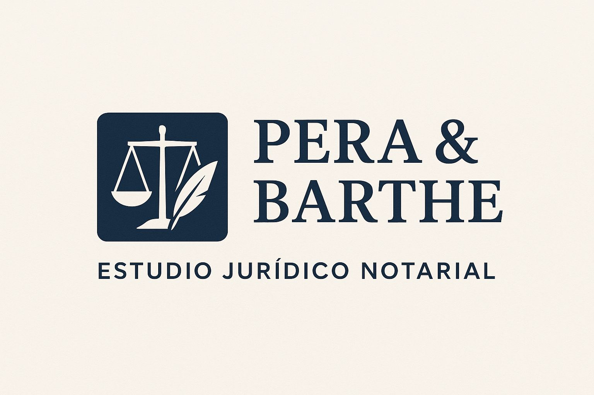

Familia // Familia Especializada:
Divorcios, uniones concubinarias, tenencia y régimen de visitas, pensiones alimenticias, adopciones, autorización de viaje y otras medidas urgentes, violencia doméstica, violencia de género, procesos CNA.
En P&B trabajamos en conjunto para brindar soluciones jurídicas y notariales, enfocadas en la eficiencia y satisfacción de nuestros clientes.

Divorcios, uniones concubinarias, tenencia y régimen de visitas, pensiones alimenticias, adopciones, autorización de viaje y otras medidas urgentes, violencia doméstica, violencia de género, procesos CNA.
Sucesiones, contratos, daños y perjuicios, responsabilidad civil, juicios ejecutivos, desalojos y accidentes de tránsito.
Solución de conflictos individuales y colectivos de trabajo, gestiones ante el Ministerio de Trabajo y de Seguridad Social, defensa en juicios laborales, negociación y redacción de contratos de trabajo, acuerdos en caso de extinción de la relación laboral.
Acompañamiento en todo el proceso penal, investigación previa, juicio oral y ejecución de la pena.
Asesoramiento y representación en materia de recursos administrativos, contencioso administrativo, contencioso reparatorio, acciones de amparo, acciones de inconstitucionalidad de las leyes, gestiones ante la Administración y ante el Banco de Previsión Social (B.P.S.).
Residencias permanentes y temporarias MERCOSUR, residencias legales definitivas, asesoramiento para la obtención de documento de identidad y pasaporte uruguayo, residencia fiscal, ciudadanía legal uruguaya.
Egresada de la Facultad de Derecho de la Universidad de la Republica.

Egresada de la Facultad de Derecho de la Universidad de la República.
Miembro de la Asociación de Escribanos del Uruguay.
No te preocupes, en la primera consulta te indicamos exactamente qué documentos vas a necesitar según tu caso.
Los honorarios se fijan luego de la primera consulta, de acuerdo a la complejidad y características de tu trámite.
Sí. Atendemos de forma presencial en nuestras oficinas y también ofrecemos atención online para mayor comodidad.
Respondemos tu consulta a la brevedad, generalmente dentro de las 24 horas hábiles.
Sí, podés coordinar una primera entrevista para analizar tu caso y recibir orientación inicial.
El abogado se especializa en la defensa de derechos y la resolución de conflictos, mientras que el escribano se centra en dar fe, redactar y formalizar documentos legales. Ambos roles se complementan para brindarte un servicio integral.
Contanos tu consulta y te respondemos a la brevedad.